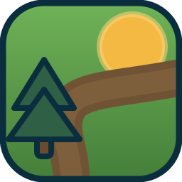

Three marks drawn out of the game's own sprites — the same straw, tunic, soil and grass values the world is painted with — and one shared wordmark. Pick a mark; the wordmark is the constant.
The straw-hat silhouette is the single most recognisable shape in the game. Costs nothing to explain and survives being 20px tall in a browser tab.
Soil ridges, clods and sunflower are the sprite's own colours. The sprout breaks the plot's top edge on purpose — that overlap is what stops it reading as a flat card.

Held to four shapes. An earlier pass carried a plot and a sunflower as well, and at 20px the whole thing turned to noise — this is what was left after cutting.